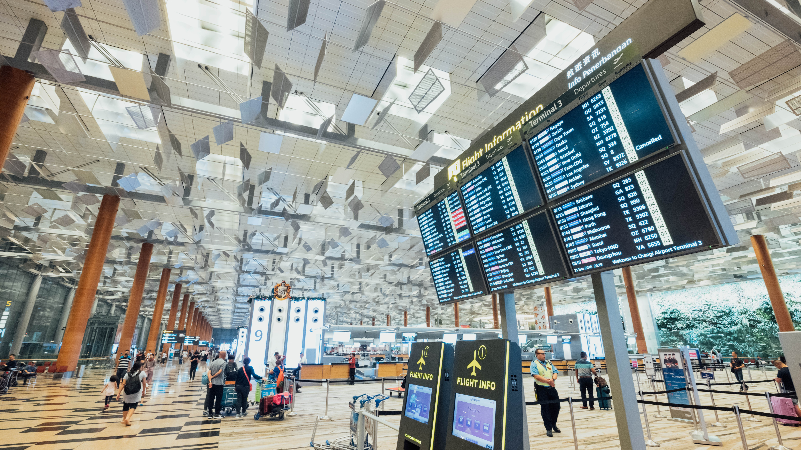

퇴사 후 한 달간의 유럽여행기
- 인천에서 코펜하겐까지
- 덴마크 코펜하겐 3박 4일
- 암스테르담 3박 4일
- 벨기에 2박 3일
- 프랑크푸르트 2박 3일 -엄마를 배웅하다-
From ICN(Incheon National Airport, terminal 1) to CPH(Copenhagen) by LH(Lufthansa)
- 루프트한자
를 타고 인천공항에서 코펜하겐 공항까지-
인천공항 1터미널에 3시간 전에 도착하여, 체크인을 하고 luggage claim까지 마쳤다. 확실히 web check-in 을 전 날 하고
baggage drop만 하면 시간이 훨씬 적게 걸린다. 이후에도 이야기 하겠지만 유럽 내에서 비행기를 탈 때는 대부분의
사람들이 self check-in을 하도록 운영되고 있었다.

짐이 잘 도착하기를 바라며, security check을 받은 후 면세점 구역의 라운지로 들어갔다. 라운지는 마티나 라운지,
많이들 사용하는 곳이다. 나는 카드가 있어서 무료로 이용가능하지만, 엄마가 있었기에 t world에서 제공하는
초콜렛 서비스를 이용하여 저렴한 가격에 라운지 이용권을 구매했다.
라운지를 알게 된 건 채 3년이 안 된다. 아니, 한 2년 정도밖에 안 된것 같다. 회사에 입사하면서 신용카드를 발급받았는데,
어떤 신용카드를 선택할까 고민하던 찰나에 여행을 좋아하니 항공권 마일리지가 쌓이는 걸로 해보자! 해서 발급 받게 되었다.